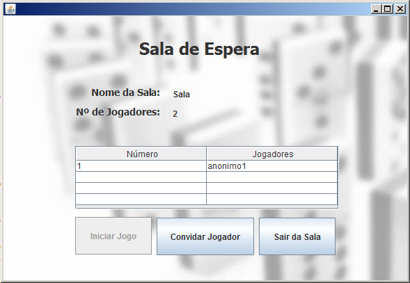

Para criar uma sala de jogo o utilizador deve selecionar o botão "Criar Sala" no Welcome Screen:
Este botão dá acesso a uma nova janela onde se deve escolher o nome da sala, o número máximo de jogadores e a password (opcional):

O nome da sala de jogo tem que ser única. Quando esta condição não é cumprida, aparece a seguinte mensagem de erro:

Quando a sala de jogo é criada com sucesso, o utilizador é remetido para uma sala de espera onde terá que aguardar pela entrada de outros utilizadores de modo a iniciar o jogo:

E esta sala de jogo também se encontra vísivel na interface Welcome Screen: